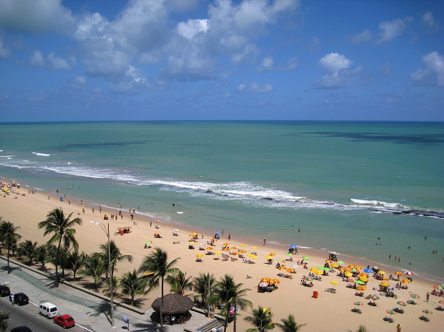

A Praia de Boa Viagem é um dos ícones mais conhecidos do Recife. Com suas águas mornas e extensa faixa de areia,
é o local perfeito para relaxar, caminhar e aproveitar um belo dia ensolarado. No entanto, lembre-se de observar as
placas de aviso sobre os tubarões e manter-se na área segura.